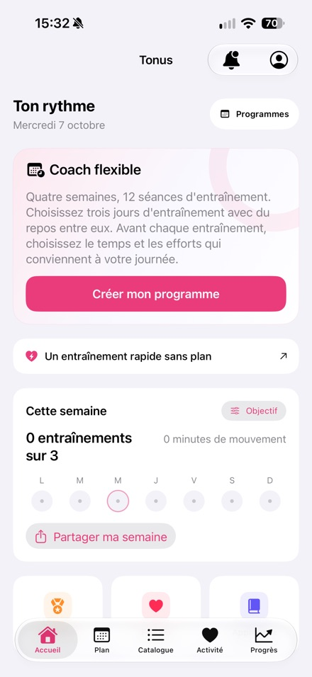
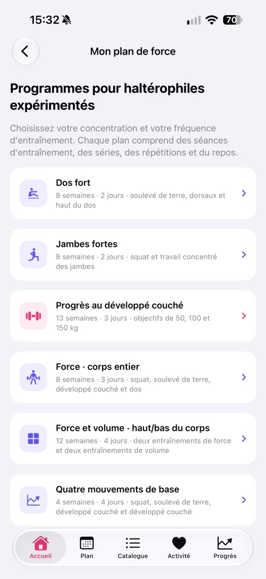
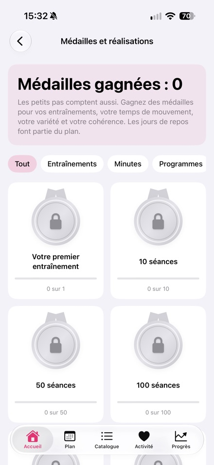

Par Nikita Revin, développeur de Tonus. Mis à jour le 13 octobre 2026 pour la version 1.4 disponible sur l’App Store.
Tonus est une application gratuite d’entraînement pour iPhone. Elle propose des séances courtes à la maison, un programme flexible et six programmes en salle. Aucun compte ni abonnement n’est nécessaire.
Tonus 1.4
- iPhone sous iOS 17 ou version ultérieure
- Accès gratuit, sans inscription, abonnement ni achat intégré
- Séances à la maison de 5, 10 ou 20 minutes, avec des options sans sauts, debout ou sans matériel
- Programme flexible de 12 séances aux jours choisis ; les séances manquées sont reportées
- Six programmes en salle, conseils techniques, minuteurs et suivi des progrès
- Apple Santé en option ; historique et données Santé conservés sur l’appareil
- Programmes et consignes écrites disponibles hors ligne ; Internet nécessaire pour les vidéos en ligne
- 60 exercices avec vidéos ; les plateformes vidéo externes peuvent afficher leurs propres publicités
- Interface disponible en français
Captures de la version 1.4 publiée sur l’App Store



Demande de test
Nikita Revin · nik007rev@gmail.com
Tonus ne fournit pas de soins médicaux. Arrêtez en cas de douleur ou de malaise. En cas de restrictions de santé, demandez conseil à un professionnel qualifié.
Télécharger Tonus